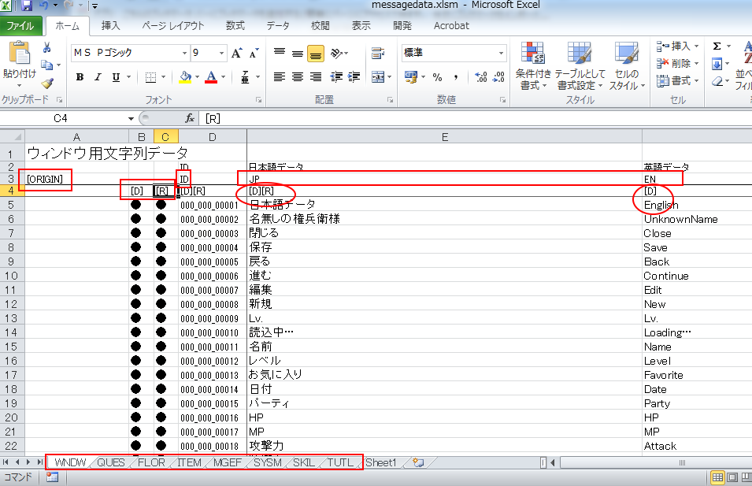
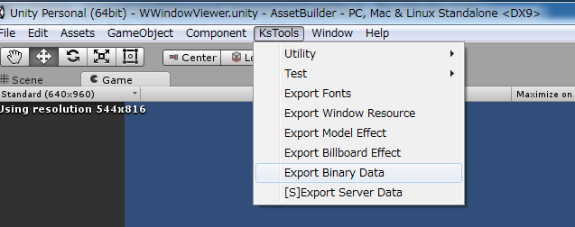

多言語対応について¶
文字リソースをアセットデータとしてアプリケーションと分離する機能を持っています。
この文字リソースを切り替えることによって多言語対応が可能になっています。
ただし、ウィンドウシステムを使うに当たって必須ではありません。
文字データのアセットデータを作成する際、MS-Excelを使用します。
作成したExcelデータからリソースデータ用のバイナリデータを出力するためのツールを用意しています。
出力されたデータを使用するためのオブジェクトとして、以下を用意してあります。
CMessageDataSheetMgr
CMessageDataSheet
文字リソースExcel書式¶
Excelファイルフォーマットは次の図のようになります。

[ORIGIN]¶
[ORIGIN]というカラムを基準にデータを取得してきます。
必須ですので必ず右下のデータが始まる先頭においてください。
[ORIGIN]と同じ行はコメント扱いになり、データ出力に影響を与えません。
[D],[R]¶
B4カラム,C4カラムの[D],[R]は、バージョンごとに出力するかしないかを選択します。 ここの列が空欄の時は、その行はデータ出力を抑止します。
[D]はデバッグバージョン
[R]はリリースバージョン
DやRの文字は自由に設定でき、コンバータに渡す引数でどのデータを出力するかしないかを選択可能になっています。 細かくバージョン管理したいときは、行を追加して下さい。
文字リソースExcelコンバート方法¶
messagedata.exe、若しくはmessagedata.pyを使ってください。
インストール手順は、 こちら を参照ください。
python(2.6以降)を用いて記述されています。
Excelデータの読み込みには、openpyxlを使用しています。
exeにするときに、pyinstallerを使っています。
[使用方法] messagedata.exe or messagedata.py¶
messagedata [-v version] Excelファイル名 [出力ファイル名]
-v version
versionで指定した、文字列のデータを出力します。 デフォルトでは、Dになっています。
Excelファイル名
エクセルファイルを指定してください。必須です。
出力ファイル名
省略したときは、エクセルファイル名から生成します。
messagedata -v R messagedata.xlsx caption
output file names:
messagedata.JP.bin
messagedata.EN.bin
etc
アセットバンドル化¶
標準で用意しているアセットバンドル化の手順です。
バイナリを自前で読み込みデータを展開する方法もあります。
メニュータブから、[Tools]->[KsSoft]->[Export Binary Data]を選択してください。
ロケールデータデータファイルを追加したときは、 KsSoftConfig を編集/追加してください。